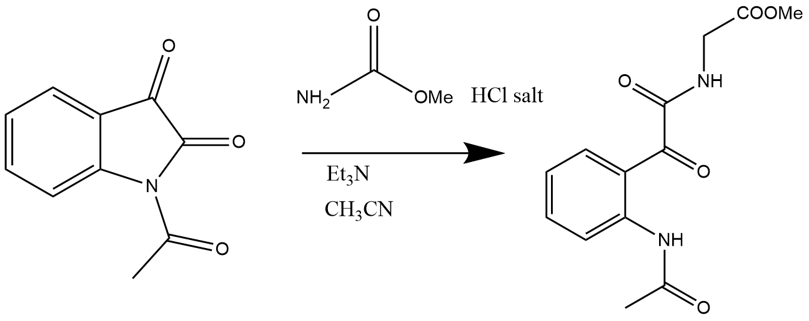

This article describes a ring opening reaction of N-Acetylisatin with the amine pyrrolidine.
Methods
N-acetylisatin (0.5 g) and dichloromethane (2 mL) were combined in a round bottom flask before the drop-wise addition of pyrrolidine (0.22 mL, 2.64 mmol) whilst the reaction mixture was stirred. This reaction mixture was then refluxed for two hours and the reaction progress was monitored by TLC. Following this, the reaction mixture was allowed to cool to room temperature prior to being transferred to a separatory funnel for a liquid-liquid extraction with hydrochloric acid (15 mL, 2M). The organic dichloromethane layer was retained whilst the aqueous layer was discarded. This organic layer was washed with brine before another liquid-liquid extraction was performed. Once again, the organic layer was retained and magnesium sulfate was added to this aliquot and the mixture was then filtered. The solvent was then removed using a rotary evaporator. The product of this reaction was an oil.
Ring opening reaction with glycine methyl ester

Reagent table
| Reagent | Molecular weight (g/mol) | Amount | Density | Mole | Remarks |
|---|---|---|---|---|---|
| Glycine methyl ester hydrochloride | 125.55 | 0.286 g | 3.17 (mmol) | ||
| Acetonitrile | 41.05 | 7.5 mL | |||
| Triethylamine | 101.19 | 0.5 mL | 3.59 mmol | ||
| N-acetylisatin | 189.17 | 0.5 g | 2.64 mmol |